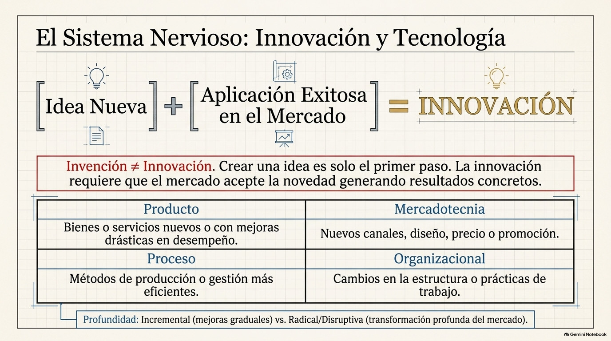
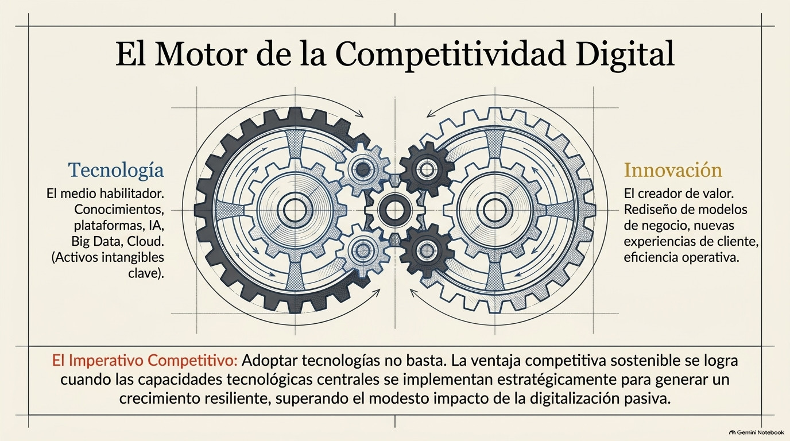

Unidad III · Tema 3.2
Innovación y Tecnología
Los impulsos que perciben el entorno, procesan datos y generan nuevas formas de crear valor.
3.2.1¿Qué es la innovación?
La innovación es el proceso en el que una empresa introduce algo nuevo o bastante mejorado, ya sea un producto, un servicio, un proceso, una forma de comercializar o una forma de organizarse, con la idea de generar valor para sus clientes y conseguir una ventaja frente a la competencia. No hay que confundirla con la invención, que es nada más crear una idea o un objeto nuevo; para que sea innovación, esa novedad tiene que aplicarse en la práctica y que el mercado la acepte. En el mundo empresarial, innovar es convertir ideas en resultados concretos, ya sea vendiendo más, bajando costos, mejorando la calidad o abriendo nuevos mercados.
3.2.2¿Qué es la tecnología?
La tecnología es el conjunto de conocimientos, técnicas, herramientas, equipos y procesos que se usan para transformar recursos en productos o servicios que satisfagan necesidades de las personas. Dentro de una empresa abarca desde la maquinaria y los sistemas de producción hasta los programas de computadora, las redes de comunicación y las plataformas digitales que sirven para manejar información y automatizar tareas. Elegirla y aplicarla bien influye directamente en la productividad, la calidad y qué tan rápido puede responder la empresa a lo que pide el mercado.
3.2.3Tipos de innovación
La innovación se puede clasificar según qué parte de la empresa transforma. La de producto es el lanzamiento de bienes o servicios nuevos o con mejoras importantes en sus características o desempeño. La de proceso se refiere a métodos de producción, distribución o gestión más eficientes que reducen costos o tiempos. La de mercadotecnia implica nuevas formas de promoción, diseño, precio o canales de venta para llegar mejor a los clientes, y la organizacional tiene que ver con cambios en la estructura, en las prácticas de trabajo o en las relaciones internas y externas de la empresa.
También se puede clasificar según qué tan nueva es. La incremental son mejoras poco a poco sobre algo que ya existe, mientras que la radical genera un cambio profundo que transforma el mercado o crea uno completamente nuevo, como pasa con las llamadas innovaciones disruptivas.

3.2.4Relación entre innovación y tecnología
Las dos están muy ligadas: la tecnología muchas veces es el medio que hace posible innovar, y la innovación es lo que permite aprovechar la tecnología para generar valor. Pero ojo, no toda innovación depende de una tecnología nueva, ni toda tecnología nueva termina siendo una innovación exitosa. Para que funcione, la empresa tiene que saber identificar lo que el mercado realmente necesita y adaptar la tecnología que tiene a eso. Hoy en día, cosas como la inteligencia artificial, el análisis de grandes cantidades de datos, la computación en la nube, la automatización y el comercio electrónico han ampliado muchísimo las posibilidades de innovar, y permiten a las empresas rediseñar sus modelos de negocio y su relación con los clientes.

3.2.5Gestión de la innovación y la tecnología en la empresa
Para sacarle provecho a la innovación y la tecnología, las empresas tienen que gestionarlas de forma planeada y sistemática. Primero, hay que vigilar el entorno tecnológico y competitivo para detectar a tiempo oportunidades y amenazas. También hay que destinar recursos a investigación y desarrollo, fomentar una cultura que impulse la creatividad y tolere el error como parte de aprender, y capacitar al personal para que domine las herramientas nuevas.
Además, conviene hacer alianzas con universidades, centros de investigación, proveedores u otras empresas, y proteger los resultados de la innovación con propiedad intelectual, como patentes, marcas y derechos de autor. Por último, la empresa debe evaluar constantemente cómo van sus proyectos innovadores para corregir el rumbo y asegurarse de que lo invertido sí ayude a cumplir los objetivos estratégicos.
3.2.6Impacto en la competitividad empresarial
Poder innovar e incorporar tecnología a tiempo se volvió uno de los principales factores de competitividad de las empresas actuales. Las que innovan logran diferenciarse de la competencia, ser más eficientes, responder rápido a los cambios del mercado y conservar a sus clientes, mientras que las que no lo hacen se arriesgan a quedarse atrás y perder participación en su sector. Por eso la innovación y la tecnología ya no son cosa aislada del área técnica, sino un eje que atraviesa toda la gestión de la empresa: está presente en la estrategia, en la cultura y en los procesos de toda la organización.
Genially · Innovación y Tecnología
Comprueba tu comprensión
Verifica tu dominio sobre innovación y tecnología con la actividad interactiva.